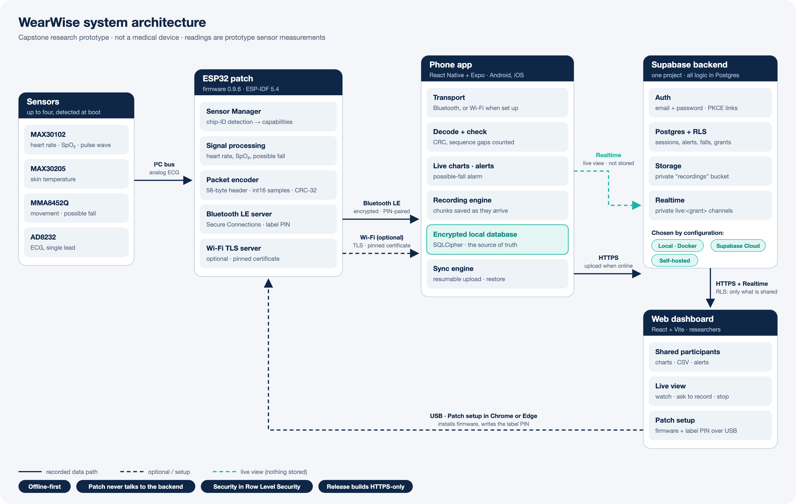

What this document covers, the security position in one page, and the system and data it protects.
| Title | WearWise Security Documentation |
| Author | Zakiul Atheef |
| Project team | WearWise Project Team: Zakiul Atheef, Hari Bethelli, Siri Bethelli and Thevindu Kodagoda Munasinghage (roles at the end of this document) |
| Licence | PolyForm Noncommercial License 1.0.0 (LICENSE): free for noncommercial use, not for sale |
| Version and date | 1.0, 14 October 2026 |
| Applies to | Handover release v1.0.0: phone app 0.1.0 (Expo SDK 57, React Native 0.86), web dashboard 0.1.0, patch firmware 0.9.6 (ESP-IDF 5.4), Supabase backend with 11 database migrations |
| Audience | The project owner, the organisation's IT and privacy staff, ethics reviewers, and developers who maintain WearWise |
| Classification | Internal: for the project owner and authorised maintainers. It contains no secrets. |
| Status | Engineering documentation of a research prototype. Not a certification, a penetration-test report or a medical-device assessment. |
| Next review | Before any use with real participants, after any major upgrade, and at least once a year |
Sources. This document consolidates and brings up to date the security material in the repository: docs/security.md, the security audit of 13 October 2026 (docs/security/audit-2026-10-13.md), the release security report of 20 September 2026, the database, firmware, Bluetooth-protocol and deployment documentation, and the handover dry run and hardware tests of 14 October 2026. Where the code has changed since an earlier review, this document follows the current code.
Severity labels used throughout: High Medium Low Info. Status: Fixed for resolved items.
WearWise is a capstone research prototype that handles health-related data. Its security practices are informed by relevant guidance: the OWASP Mobile Application Security Verification Standard (MASVS), the OWASP Top 10, and Supabase's security recommendations. No part of the system has been certified, penetration-tested by a third party or formally audited, and it is not a medical device. Treat it as a prototype until the owner's own independent review says otherwise.
| Risk | Rating | Issue |
|---|---|---|
| R-01 | High | Patch flash is unencrypted and USB download is open: brief physical access can copy bonds, the TLS key and the PIN. Fix: Secure Boot V2 and flash encryption (one-way, per chip). |
| R-02 | Medium | No two-factor sign-in for researchers and clinicians. |
| R-03 | Medium | Open sign-up: scripted accounts could fill storage (no CAPTCHA or enrolment code). |
| R-04 | Medium | The app can't cryptographically prove a patch is genuine. |
| R-05 | Medium | Hosted project settings outside the migrations (Site URL, SMTP, email confirmation) must be set by the owner. |
| Component | Role | Technology |
|---|---|---|
| Sensor patch | Reads sensors and streams packets to one phone | ESP32, ESP-IDF 5.4, C (firmware 0.9.6) |
| Phone app | Pairing, live view, recording, encrypted local store, upload, sharing | React Native 0.86, Expo SDK 57, SQLCipher |
| Backend | Accounts, cloud copy of recordings, sharing, alerts, live-view relay | Supabase: Postgres 17, Auth, Storage, Realtime, PostgREST |
| Web dashboard | Researchers and clinicians (and participants' own view); Patch setup over USB | React 19, Vite, static site |
Design choices that reduce the attack surface: there are no Edge Functions and no server code of WearWise's own (Postgres functions and policies do the server work); the patch never talks to the backend; and the backend is chosen by configuration only.
The apps contain no analytics or remote crash-reporting service, so no health data leaves through telemetry. Recordings are encrypted on the phone and protected by access control in the cloud. They are not end-to-end encrypted with the phone's key, so a Supabase project administrator can read them.
| Data | Class | Where it is kept | Protection and visibility |
|---|---|---|---|
| Recordings: ECG, pulse wave, heart rate, SpO₂, skin temperature, movement | Health (sensitive) | Phone: SQLCipher database. Cloud: recorded_sessions, recorded_channels rows and private Storage files (.wwch) | Encrypted on the phone. Cloud: RLS and private bucket. Viewers see only granted signals while the grant is live |
| Possible falls, vital alerts | Health (sensitive) | Phone database; fall_events, vital_alerts | RLS. Falls are visible to a viewer only if the grant includes falls |
| Health profile: sex, date of birth, height, weight, blood group | Health (sensitive) | Phone only (encrypted database) | Never uploaded |
| Email, display name, role, status | Personal | Supabase Auth, profiles | Own row only. Viewers see the display name, never the email |
| Password | Credential | Supabase Auth (salted hash) | Never stored by the apps. Minimum 10 characters, enforced by the server |
| Consent, 18+ and terms records | Compliance record | profiles | Timestamps set by the server. Only known terms versions are accepted |
| Share codes | Access token | share_codes | SHA-256 hash only. Single use, 24 h. RPC only |
| Access grants | Authorisation record | access_grants | Changed only by RPCs. Revoked rows kept as an audit trail |
| Session tokens | Credential | Phone: OS secure store (this device only). Browser: storage managed by supabase-js | Wiped on sign-out (on the phone, even when offline) |
| Wi-Fi name and password | Credential | Phone secure store, per patch and per account. Patch: RAM only | Sent only over the authenticated, encrypted Bluetooth link |
| Patch identity, Bluetooth address, connection events | Device identifier | Phone database | Encrypted, scoped to the account |
| Patch label PIN, bonds, TLS private key | Credential | Patch flash (wwcfg, NVS) | Plain-text flash (R-01) |
| Live-view readings | Health (transient) | Nowhere: Realtime broadcast only | Private channel per grant. Nothing stored |
| Preferences (theme, sync toggle) | Non-sensitive | Phone: unencrypted key-value store. Browser: local storage | No personal or health data |
Who might attack WearWise, what they're after, and how each threat is handled.
Participants' health recordings and alerts · account credentials and sessions · the authorisation model (who may see whom) · patch pairing secrets · service keys and signing keys · availability of recording (it must not be lost).
A curious or malicious app user holding the public key · a researcher trying to see more than was shared · an attacker within radio range · an attacker on the same Wi-Fi · a thief of a phone or patch · automated abuse of sign-up · a compromised dependency · a careless or compromised administrator.
| Threat | Mitigation | Residual |
|---|---|---|
| A user calls the API directly with the public key to read others' data (OWASP: broken access control) | RLS on every table, anon has no privileges, own-row policies, viewer access only through live grants, Storage object-name rules. Verified by 277 SQL checks, 8 pgTAP tests and two-user API tests | Low |
| A user promotes themselves to researcher, or edits consent or status columns | Only display_name is client-writable. Roles change only through admin SQL. The sign-up trigger refuses sign-ups without consent, 18+ and known terms | Low |
| A researcher sees more than the participant shared | Grants scoped to signal types and falls. Sessions visible only if they contain a granted signal. Email hidden. Access ends at once when revoked or suspended | Low: session metadata (device name, firmware) is visible (R-07) |
| Share codes are guessed or brute-forced | Single-use codes, about 49.5 bits, 24 h, SHA-256 stored, 10 failures per hour per viewer (locked per researcher against races) | Low |
| Eavesdropping or tampering on Bluetooth | LE Secure Connections only, passkey (label PIN), bonding. Every characteristic needs an encrypted, authenticated link. Weak or short-key links are dropped and their bonds deleted | Low |
| A nearby attacker pairs with a patch | Pairing only with no bonds or within 60 s of pressing BOOT. Lock-out after 3 failures. At most two bonded devices. Unauthenticated links dropped after 30 s | Medium: label PIN is fixed per patch (R-06) |
| A look-alike patch receives the Wi-Fi password or sends fake readings | A saved patch whose identity changes is refused. Strict protocol and packet checks (CRC, IDs, rates) | Medium: no cryptographic patch identity (R-04) |
| Interception or hijack of the Wi-Fi stream | TLS with the patch certificate pinned (SHA-256 read over authenticated Bluetooth). Per-socket proof-of-possession within 3 s, compared in constant time. Release builds refuse Wi-Fi without a pin | Low: 4-byte PoP (R-10) |
| A stolen phone exposes recordings | SQLCipher with the key in Keychain/Keystore (this device only). Android backup off. Screenshots blocked | Low: depends on the device lock |
| A stolen patch is cloned | None in the current build | High (R-01) |
| Scripted sign-ups fill storage | Uploads only into one's own folder with the app's exact file names. 50 MiB per file. Consent required | Medium (R-03) |
| Phishing or reuse of a researcher's password | 10+ characters, common passwords refused by the apps, suspension ends all sessions | Medium: no 2FA (R-02) |
| Script injection in the dashboard (OWASP: injection, XSS) | React escaping, strict CSP (script-src 'self', one backend host), no framing. Live-view values validated and clamped | Low |
| Password-reset or sign-in link abuse | PKCE flow, recovery links only, refusal of a link for a different account, redirect allow-list | Low |
| Malicious dependency install scripts (supply chain) | ignore-scripts=true, lockfile, pinned flasher library | Low: see the advisories (section 26) |
| Secrets committed or bundled into an app | Gitignored .env and keystores, release-config check, APK audit script, handover scan | Low |
A malicious wearwise:// link crashes or misdirects the app | Every incoming link is checked before the router reads it. Protected routes check session ownership | Low |
| Administrator error or a compromised admin | Admin scripts check their inputs and end sessions on change. Tokens read without echoing them. Few project members | Medium: organisational (section 17) |
The controls in each layer, and where they live in the code.
| Pairing mode | I/O capability DisplayOnly, bonding, MITM protection, LE Secure Connections only, 16-byte keys. A link that isn't Secure Connections, isn't authenticated or uses a short key is dropped and its bond deleted. |
| Passkey | The 6-digit label PIN, written by the dashboard's Patch setup (random, guessable values like 123456 skipped, verified on the chip). A patch never set up there makes its own and prints it once on the serial console. |
| When pairing is allowed | Only with no bonds, or within 60 s of pressing BOOT. Three failed pairings lock pairing until BOOT is pressed (survives reboots). |
| Bonds | At most two bonded phones or tablets. A third replaces the oldest. One connection at a time. |
| Link protection | Every characteristic requires an encrypted, authenticated link. A link that doesn't authenticate is dropped after 30 s (60 s while the PIN prompt is up), so nobody can hold the only connection slot. |
| Randomness | Secrets are generated with the hardware true-random source enabled. |
| Serial console | The PIN is printed only for an unlabelled patch. Readings only in a debug build. |
| Packets | Versioned binary format with CRC-32. The app checks length, framing, version, sensor, encoding, CRC, session ID and patch ID on every packet. |
| At rest | Open Flash, NVS (bonds, TLS key) and the PIN record are plain text, and ROM download mode is open (R-01). The documented fix is in the firmware README, "Production hardening": Secure Boot V2, flash encryption in release mode, NVS encryption and disabled ROM download. These burn eFuses (permanent) and need chip revision 3.0 or later plus a signed-update path in Patch setup. |
Code: firmware/wearwise-esp32/main/communication/ (gatt.c, ble_pairing.c), main/core/factory_config.h. Protocol: docs/ble-protocol.md. The hardware tests of 14 October confirmed an encrypted, authenticated, bonded link with a 128-bit key on reconnect, and a fresh PIN pairing (H6, H13).
Bluetooth carries all data on its own. Wi-Fi is an optional, faster path on the same local network:
wss://<patch-ip>/stream accepting only that certificate (native pinned-WebSocket modules).Residual: the proof-of-possession value is 4 bytes, lasts one boot and is shared by bonded phones (R-10). The patch supports 2.4 GHz networks only. WPA2 passwords under 8 characters are refused before they're sent.
| Local database | op-sqlite with SQLCipher. The key is 32 random bytes in the OS secure store. If the store can't open, the app runs memory-only and says so: there is no plain-text fallback. |
| Session | Stored by supabase-js in Keychain/Keystore with AFTER_FIRST_UNLOCK_THIS_DEVICE_ONLY. Sign-out wipes stored keys even offline. A fresh iOS install discards a session left by an earlier install. |
| Account isolation on one phone | The device registry, saved Wi-Fi and sync state belong to the account. Notifications are cleared on sign-out. Sync checks account identity. |
| Network | HTTPS only in release builds, checked at run time (public-config.ts) and at build time (scripts/check-release-config.cjs, which refuses http, loopback and private-LAN hosts, and any non-public key). The release Android manifest forbids cleartext traffic. |
| Screens | Release Android builds set FLAG_SECURE (no screenshots or recent-apps previews). iOS shows a privacy cover in the app switcher. |
| Backups | Android allowBackup=false. Data is excluded from cloud backup and device transfer. |
| Deep links | Every incoming wearwise:// link is validated before Expo Router reads it. Email links use PKCE. |
| Input from the patch and the cloud | Strict protocol checks on Bluetooth and Wi-Fi. Restored recordings are checked (sample counts, sensors, rates) before display. |
| Other | Share code cleared from the clipboard after 2 minutes. Uploads sent as not cacheable. Generic error messages (no server details). Release Android permissions limited to Internet and Bluetooth (location only on Android ≤ 11, for scanning), plus vibration and notifications for alerts. |
| Signing | The owner's own release keystore (RSA-3072, created by create-release-signing.cjs). The build refuses to run without it. |
packages/password).create_profile_after_signup trigger refuses an account without consent, an 18+ confirmation and a terms version the server knows. The server stamps the times itself.supabase/admin/create-viewer.sql (one-time password, terms accepted by the person at first sign-in).wearwise://auth/confirmed, wearwise://auth/reset and the dashboard's /reset-password.Not yet: multi-factor authentication (R-02), CAPTCHA or an enrolment code at sign-up (R-03), and leaked-password protection (a Supabase plan setting).
RLS is enabled on every table in public, and privileges start from nothing: anon has no table privilege and can execute no function. authenticated gets only what the apps use (pinned by a test), and RLS then decides which rows.
| Table | Read | Write |
|---|---|---|
profiles | Own row | Trigger creates it. Own row, display_name column only, while active |
recorded_sessions | Own. A viewer: non-discarded sessions with a granted signal | Own, active and 18+ accounts. Server-stamped columns excluded |
recorded_channels | Own. A viewer: granted signals | Own rows, into own sessions only |
fall_events | Own. A viewer: if the grant includes falls | Own, into own sessions |
vital_alerts | Own. A viewer: granted signals | Own. A session reference must be own and uploaded |
access_grants | Participant: own, including revoked. Grantee: live ones only | RPC only |
share_codes, share_code_attempts | None | RPC only (no table privileges at all) |
A "viewer" holds a live grant: not revoked, both accounts active, and the grantee still a researcher or clinician. Access ends the moment any of these stops being true. All RPCs are security definer with an empty search_path. A read-only schema fingerprint (supabase/admin/schema-fingerprint.sql) proves that a hosted database matches the migrations.
create_share_code(). Format XXXXX-XXXXX, about 49.5 bits from an unbiased generator, valid 24 h, single use. A new code replaces an unused one, and only the SHA-256 hash is stored.redeem_share_code()): researchers and clinicians only. 10 failures per hour per viewer, with a per-viewer lock against racing. Failures are returned as results, not errors.revoke_access_grant()), and the participant can narrow the scope (update_access_grant()). One live grant per pair. Revoked rows are kept as the participant's audit trail.list_shared_participants() returns display names only, never emails. Browser notifications on the dashboard say only what kind of alert.live:<grant id> that only the two parties may join. Nothing is stored. It pauses in the background, and removing or narrowing a viewer refreshes it at once. The phone acts only on stop, record and record-stop from a viewer, and a recording starts only when the participant taps Start.recordings: private, 50 MiB per file, application/octet-stream only. Writes are allowed only into the uploader's own folder, by an active account, with exactly the name <uid>/<session uuid>/<channel uuid>.wwch. Reads: own folder, or a viewer with a live grant covering that channel.fall_events and vital_alerts, INSERT and UPDATE only. DELETE events are not filtered by RLS, so they aren't published.alerts:<user id> may be joined only by its owner, and nobody may send on it.private: true fails closed.| Content-Security-Policy | default-src 'self'; script-src 'self'; connect-src 'self' https://<backend> wss://<backend> (one host only); frame-ancestors 'none'; object-src 'none'; base-uri 'self'; form-action 'self'; upgrade-insecure-requests. style-src allows inline styles for the theme tokens. |
| Other headers | Strict-Transport-Security: max-age=63072000; includeSubDomains, X-Frame-Options: DENY, X-Content-Type-Options: nosniff, Referrer-Policy: no-referrer, Cross-Origin-Opener-Policy: same-origin, and Permissions-Policy allowing only serial (for Patch setup). |
| Generated per deployment | npm run deploy-config -w dashboard writes the headers for the chosen backend. The build stops if the headers name another backend. |
| Sign-in | supabase-js with PKCE. A reset link for a different account than the one signed in is refused. Safe return paths after sign-in. The 18+ and terms gate reads server columns, not client metadata. |
| Caching | Every request is cache: 'no-store', so decoded recordings don't outlive sign-out in the disk cache. |
| Patch setup (Web Serial) | Runs only between the tab and the USB port. Nothing about a patch is sent to Supabase. Firmware chosen from a file always needs confirmation and shows its SHA-256 (real authenticity needs Secure Boot, R-01). |
.env files, keystores, Apple signing files, device databases, build outputs and Supabase Studio's saved queries (supabase/snippets/) are gitignored. Templates are .env.example..npmrc sets ignore-scripts=true, so dependencies can't run code at install time. The flasher library (esptool-js) is pinned.check-release-config.cjs (HTTPS public backend, publishable key, signing present) and tools/audit-apk.ps1, which checks a built APK for leaked secrets and developer paths.npm audit fix --force: it downgrades Expo.Which secrets exist and who holds them, account administration, incidents, logging and local development.
Nothing in this table is in the repository, and none of it should ever be.
| Secret | Created by | Kept in | Never |
|---|---|---|---|
| Supabase database password | The owner, at project creation | The organisation's password manager | In a file, in the repo, in an app |
Service-role / sb_secret_ key | Supabase | Supabase dashboard. Used only by admin tooling at run time (admin.mjs fetches it in memory) | In an app, .env or a log |
Personal access token (sbp_…) | Each administrator | The CLI's keychain (supabase login), or one shell session (read -rs) | Committed or shared |
| SMTP credentials | The owner | Supabase → Authentication → SMTP | In the repo |
| Android release keystore and passwords | The owner (create-release-signing.cjs) | apps/mobile/ (gitignored) plus a secure backup. Losing it means the app can't be updated | Committed |
| Apple signing certificate and profiles | The owner's Apple team (Xcode) | The macOS keychain and Apple account | Committed |
| Patch label PINs | Patch setup, per patch | The patch's flash and its printed label | In the repo or Supabase |
| Patch TLS key, Wi-Fi PoP | The patch (first boot / each boot) | The patch | — |
| Secure Boot signing key (once R-01 is done) | The owner | Offline, in a secure store | On a build machine without protection |
Public by design: the project URL and the publishable (anon) key ship inside the apps, so treat them as public. RLS protects the data. The local stack's keys and the demo password wearwise-demo-only work only against a local stack on the developer's own machine. If a private secret is ever committed or exposed, rotate it: deleting the file is not enough.
| Task | Tool | Security notes |
|---|---|---|
| Add a researcher or clinician | supabase/admin/create-viewer.sql | One-time password, sent privately and separately. The person accepts the terms and changes the password at first sign-in. See the guide Adding a Researcher or Clinician |
| Make an existing account a viewer | set-role.sql | Confirmed email only. Ends all sessions |
| Locked-out viewer | reset-password.sql | New one-time password. Ends all sessions |
| Suspend or reactivate | set-status.sql | Takes effect on the next request. Nothing deleted |
| Review who has access | overview.sql (read-only) | Run regularly, and at every handover |
| Delete an account and its data | admin.mjs delete-account | Removes Storage files first, then the account (cascade). Can't be undone |
| Find orphaned files | orphaned-recordings.sql (read-only) | Files left by accounts deleted in Authentication → Users |
Good practice: one account per person; Supabase project membership only for people who administer it; suspend promptly when someone leaves; delete saved SQL Editor queries that contain email addresses. Terms changes need a migration that adds the new version to private.terms_versions before an app that sends it ships.
Follow the organisation's incident and privacy procedures. These playbooks cover the WearWise-specific steps.
| Incident | Immediate steps |
|---|---|
| Service key, database password or access token exposed | Rotate it in the Supabase dashboard (Project Settings → API keys / Database), revoke exposed personal tokens, review Supabase logs for its use, run schema-fingerprint.sql to confirm the schema is unchanged, and remove the secret from wherever it leaked (history included). |
| Researcher or clinician account compromised | set-status.sql → suspended (ends sessions and hides every share at once). Then reset-password.sql, and review overview.sql for the affected participants. Reactivate once safe. |
| Participant's phone lost or stolen | Local data is encrypted and tied to the device's secure store. Run reset-password.sql for the account to end its sessions, and have the participant set a new password. If the phone was paired with a patch, use New PIN on that patch. |
| Patch lost or stolen | Treat its bonds and TLS key as exposed (R-01). Participants Forget it in the app and remove it in the phone's Bluetooth settings. A recovered patch is reset with Set up (new PIN, settings erased). |
| Suspected unauthorised data access | Suspend the accounts involved, preserve Supabase logs, and involve the privacy officer. Notification duties (for example, Australia's Notifiable Data Breaches scheme) are the organisation's decision. |
| Vulnerable or malicious dependency | Identify where it is used (npm ls <package>), update through npx expo install --fix or the Expo SDK, retest on devices, and rebuild and redistribute releases. |
supabase start publishes the API, database, Studio and Mailpit ports on all network interfaces, so phones on the Wi-Fi can reach the API. Use it only on a trusted network, or firewall ports 54322–54324.http:// to local and LAN hosts, and the Android debug manifest allows cleartext traffic. Release builds do neither.@example.invalid.rls-live.mjs creates random-password users and deletes exactly its own, but a separate development project is better.How the controls were verified, the history of reviews, and what changed since the last audit.
| Check | Date | Result |
|---|---|---|
| Database RLS and security suites on a real local Supabase stack | 14 Oct 2026 | Pass 277 plain-SQL checks + 8 pgTAP |
Sync and Storage isolation through the public API, two accounts (sync-live.mjs) | 14 Oct 2026 | Pass 7/7 (local) |
| Two-account isolation on the hosted project | 13 Oct 2026 | Pass 19/19. Anonymous requests to any table or RPC: permission denied |
| Hosted database matches the migrations (schema fingerprint) | 14 Oct 2026 | Match in everything that affects behaviour (one function differs only by a comment) |
| Unit tests and type checks | 14 Oct 2026 | Pass app 283 tests (40 suites), dashboard 110, legal 49 |
| Hardware: pairing, encryption, reconnect, pinned-TLS Wi-Fi, sharing, live view (H1–H13, firmware 0.9.6, Samsung phone) | 14 Oct 2026 | Pass 13/13, including an authenticated, bonded 128-bit link and a fresh PIN pairing |
Malformed wearwise:// links | 13 Oct 2026 | Pass app stays up (Android emulator, iOS simulator) |
| Handover scan of tracked files and history for credentials and personal data | 13 Oct 2026 | Pass no credentials. Personal data redacted or excluded (fresh history) |
| Git history of the published repository (7 commits, 661 file versions): keys, tokens, private keys, personal data, local paths, sensitive files, Claude traces | 14 Oct 2026 | Pass none found. Patch MAC addresses (now redacted) remain in older commits |
| Dependency alerts (Dependabot, 13) | 14 Oct 2026 | 8 fixed 5 assessed, none reachable in the app unmitigated (section 26) |
| Bundled firmware rebuilt from the committed tree | 14 Oct 2026 | Pass manifest records commit 52e94d8; code byte-identical to the previous bundle (only build timestamps and hashes differ) |
| Release APK inspection (signing, permissions, FLAG_SECURE, bundle scan) | 20 Sep 2026 | Pass for build 0.1.0. Repeat for every release with tools/audit-apk.ps1 |
| Review | Scope and outcome |
|---|---|
| Release security report, 20 Sep 2026 | Android release candidate 0.1.0, reviewed against relevant MASVS principles. Release signing, session isolation between accounts, backups off, permissions trimmed, deep-link filtering, PKCE callbacks. Raised the firmware pairing and backend policy items that the later audit closed. |
| Security audit, 13 Oct 2026 | Five read-only reviews (app, dashboard, database, firmware, repository), then fixes. No Critical findings, and no leaked secrets in code, history or the app bundle. Two High findings, both in the firmware: pairing (fixed) and plain-text flash (open, R-01). Database fixes in migration 9 were applied to production on 13 Oct. |
| Handover verification, 14 Oct 2026 | Two clean dry runs of the documented setup, hardware tests H1–H13, and a schema fingerprint of the hosted project. Fixes went into the documentation and the test infrastructure. |
| Area (13 Oct audit) | Findings | Status now |
|---|---|---|
| Phone app (M1–M12) | 12 | 10 fixed. M2 patch authenticity partly fixed (R-04). M12 minor Android surface left as is. |
| Web dashboard (D1–D11) | 11 | 9 fixed. D10 mitigated by CSP. D11 capped by the bucket's file limit. |
| Database, storage and sign-in (B1–B14) | 14 | 9 fixed. Partly: B1 (no 2FA, R-02), B4 (sign-up abuse, R-03), B10 (session metadata, R-07), B12 (hosted settings, R-05). B3 fixed for the study team. |
| Firmware (F1–F10) | 10 | 8 fixed. F2 open (R-01). F9 partly (R-10). |
| Repository (R1–R10) | 10 | R1, R2, R4, R5, R7, R9 resolved. R6 mostly fixed. R3 tracked (section 26). R8 is local only. R10 (no CI or secret scanning) open (R-09). |
.mcp.json, audit R1) is not part of the repository. The original project reference was replaced with configuration. Studio's saved queries are now gitignored.supabase/sql-tests/. A bare supabase test db could otherwise have run a stub granting full default privileges on a real stack (fixed during the dry run). Database checks went from 261 to 277, plus 8 pgTAP.The open risks, what the owner must do before real participants, and dependency advisories.
| ID | Risk | Rating | Recommendation |
|---|---|---|---|
| R-01 | Patch flash unencrypted, ROM download open: physical access can clone a patch or flash other firmware | High | For patches that leave the lab: Secure Boot V2, flash encryption (release), NVS encryption, disabled ROM download (firmware README, "Production hardening"). Needs chip revision ≥ 3.0, an offline signing key, signed images in Patch setup, and an OTA path. Try on spare boards first: eFuses are permanent. |
| R-02 | Single-factor staff accounts: one leaked password exposes every participant sharing with that person | Medium | Add TOTP enrolment and verification to the dashboard, require it for viewer access in the database, and enable leaked-password protection if the plan allows. |
| R-03 | Open sign-up: scripted accounts can consume storage | Medium | CAPTCHA (e.g. Cloudflare Turnstile, hCaptcha) or a study enrolment code. Monitor storage growth. |
| R-04 | No cryptographic patch identity: a look-alike board could receive Wi-Fi details or inject readings | Medium | A per-patch secret printed on the label next to the PIN, checked with a challenge on every connect before Wi-Fi details are sent. |
| R-05 | Hosted settings outside the migrations: Site URL, redirects, SMTP, email confirmation, Realtime public access | Medium | Apply docs/deployment.md §3: email confirmation on, own SMTP, Site URL and redirects for the hosted dashboard only (no localhost), Realtime public access off. |
| R-06 | The label PIN is fixed per patch: anyone who reads it and presses BOOT can pair | Low | Keep patches under supervision. Use New PIN whenever a patch changes hands. |
| R-07 | Viewers see all columns of shareable sessions (device name, firmware, settings) | Low | A column-limited view for viewers. |
| R-08 | No audit log of researcher reads beyond Supabase's own logs | Low | Retain Supabase logs per the protocol, or add read auditing for viewer RPCs. |
| R-09 | No CI, automated tests on change, or secret scanning | Low | A gitleaks pre-commit hook and a CI job running the unit tests and database suites. |
| R-10 | Wi-Fi proof-of-possession is 4 bytes, per boot, shared by bonded phones | Low | A longer, per-phone value in a future protocol version. |
| R-11 | Five dependency advisories with no non-breaking fix (section 26) | Low | Upgrade the Expo SDK and retest on devices; then dismiss or close the remaining alerts. |
| R-12 | No retention or purge policy in the app or backend | Medium (privacy) | Define retention with the ethics approval, and implement purge and consent-withdrawal handling. |
| R-13 | The original capstone Supabase project still exists with its own data and keys | Medium | Retire it, or hand it over deliberately to the owner's organisation (docs/deployment.md). |
| R-14 | The iOS release build and pinned-WebSocket module have had less device testing | Low | Test an iOS release build on devices before use. |
packages/legal/src/org.ts; the legal documents show a "draft" notice until you do.npm run deploy-config -w dashboard).GitHub Dependabot raised 13 alerts on the repository (from package-lock.json). On 14 October 2026 8 were fixed by lockfile updates within the version ranges the dependents already allow (no forced upgrades), including the only critical one. After the fix npm audit reports 65 entries across the workspace (0 critical, 49 high, 16 moderate), or 44 without development-only packages. These are counted once per dependent path; they come from five underlying packages:
| Package | Severity | Status | Path and assessment |
|---|---|---|---|
shell-quote | Critical | Fixed 1.12.0 | React Native developer tools |
compression | High | Fixed 1.8.2 | Expo CLI development server |
brace-expansion (6 alerts) | High | Fixed 1.1.21 / 5.0.12 | File matching in build and lint tooling |
braces | High | No fix exists | File matching in Metro and Jest. Patterns come from the project, not users; not in the app or dashboard bundle |
node-forge | High | No fix exists | Expo CLI tooling (certificates, update signing). Expo Updates signing isn't used; not in the app bundle |
sprintf-js | Moderate | No fix exists | Test-coverage tooling, development only |
uuid | Moderate | Not affected | iOS prebuild tooling (xcode), which only calls v4(); the bug is in v3/v5/v6 with a buffer |
decode-uri-component | Moderate | Mitigated | Expo Router URL parsing, in the app at run time. Incoming links over 2,048 characters or with malformed percent-encoding are refused before Expo Router reads them; Android refuses any %. Fixed in Expo Router 58 |
The full per-alert assessment is in docs/security/dependency-advisories.md. The remaining five clear with an Expo SDK upgrade and a device retest. npm audit fix --force would install much older Expo versions and break the app.
| Path | What |
|---|---|
supabase/migrations/ (11 files) | Schema, RLS policies, grants, RPCs, triggers, Storage and Realtime policies. Migration 9 is the security review. |
supabase/sql-tests/, supabase/tests/ | 277 plain-SQL checks, 8 pgTAP tests, API isolation scripts |
supabase/admin/, supabase/scripts/admin.mjs | Administration scripts and the schema fingerprint |
supabase/config.toml | Local Auth settings (password length, redirects) |
firmware/wearwise-esp32/main/communication/ | Bluetooth pairing, GATT security, Wi-Fi TLS server, proof-of-possession |
firmware/wearwise-esp32/README.md | Production hardening (Secure Boot, flash encryption) |
apps/mobile/src/platform/secure-storage/, src/data/local/ | Secure store, SQLCipher key and database |
apps/mobile/src/data/remote/public-config.ts, scripts/check-release-config.cjs | HTTPS-only release configuration checks |
apps/mobile/modules/pinned-websocket/ | Certificate-pinned Wi-Fi stream (Android, iOS) |
apps/mobile/src/app/+native-intent.tsx | Incoming deep-link filter |
apps/dashboard/scripts/deploy-headers.mjs | CSP and security headers |
apps/dashboard/src/data/client.ts | PKCE sign-in, no-store requests |
packages/password, packages/legal | Password rules; terms and their version |
.npmrc, .gitignore, tools/audit-apk.ps1 | Supply chain, ignored secrets, APK audit |
docs/security.md, docs/security/ | Security notes, the 13 October audit, the 20 September release report |
docs/operations/researcher-access.md | Admin runbook for researcher and clinician access |
| RLS (Row Level Security) | Postgres rules that decide which rows each user may read or change |
| RPC | A database function the apps call by name. In WearWise, security definer with fixed checks |
| Publishable / anon key | The public Supabase key that ships in the apps. Not a secret |
| Service-role / secret key | A Supabase key that bypasses RLS. Admin use only, never in an app |
| PKCE | Proof Key for Code Exchange: protects email sign-in and reset links from interception |
| LE Secure Connections | Bluetooth Low Energy pairing based on elliptic-curve key exchange, here with a passkey |
| Bond | Keys a patch and a phone keep after pairing, so they reconnect encrypted |
| Certificate pinning | Accepting only one known certificate (by its SHA-256) instead of any trusted one |
| PoP | Proof-of-possession: a value showing the phone read it over the authenticated link |
| SQLCipher | Encrypted SQLite, used for the phone's database |
| CSP | Content-Security-Policy: browser rules limiting where a page may load code and connect |
| eFuse | One-time programmable bits in the ESP32 that permanently enable security features |
| Zakiul Atheef | Project Lead, Scrum Master, Technical Lead, Security Engineering Lead and Integration Lead |
| Hari Bethelli | Cloud & Data Engineer |
| Siri Bethelli | UI/UX & Data Visualisation Engineer |
| Thevindu Kodagoda Munasinghage | Security Engineer, Documentation Lead and QA & Testing Lead |
Project Owner: Shanmuga Sundar Dhanabalan, Deputy Director, CTI, La Trobe University (project brief and stakeholder direction). Development: the WearWise Project Team, the student development team. © 2026 WearWise Project Team · La Trobe University CSE3CAP Capstone Project. Licensed under the PolyForm Noncommercial License 1.0.0: free to use, copy and change for noncommercial purposes, not for sale. See LICENSE, NOTICE and TEAM.md in the repository.
WearWise Security Documentation · Author: Zakiul Atheef · Version 1.0, 14 October 2026 · handover release v1.0.0. WearWise is a research prototype and not a medical device. Its security practices are informed by relevant guidance; nothing about WearWise is certified or independently tested.